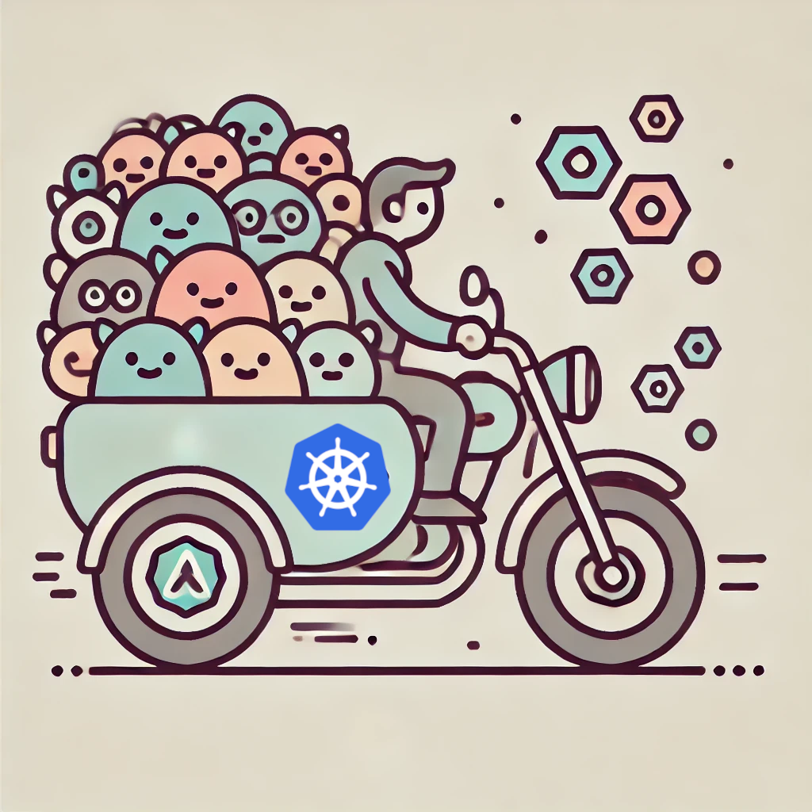
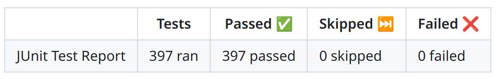

# Server Side Wasm & Chicory ## The use cases <img src="./imgs/WebAssembly_Logo.svg" height="15%" width="15%" style="height: 15%; width: 15%;"></img>
> WebAssembly on the server is the future of computing. > > -- <cite>Solomon Hykes, founder of Docker</cite>
### TL;DR: portable binary format for executable programs
### Goals: - speed - security - easy embeddings
<img src="./imgs/wasm_bytecode_chicory.png" style="height: 70%; width: 70%;"></img>
# Chicory <br/> A **pure Java**(zero deps) runtime for Wasm <br/> https://github.com/dylibso/chicory
<img src="./imgs/wasm_bytecode_chicory_only.png" style="height: 70%; width: 70%;"></img>
# Why: - reuse - stay within the JVM boundaries - JIT - observability - monitoring - ...
# Components: - pure interpreter: best for portability - AOT(ahead of time) compiler: best for speed *[experimental]*
# Use cases
# Embedding CLIs > Inspired by: https://github.com/orgs/wasilibs
# Polyglot extensions - [Camel](https://camel.apache.org/components/4.8.x/wasm-component.html) - [Kroxy (community)](https://github.com/andreaTP/kroxylicious-wasm) - [Kafka (Connect)](https://lburgazzoli.github.io/posts/2024-02-01_apache_kafka_connect_meets_wasm_part_1/) - [Keycloak](https://github.com/pedroigor/keycloak-wasm-policy-provider) - ... <br/> > Inspired by: [Extism](https://extism.org/)
# WASM Data transformations <br/> > Inspired by: [RedPanda](https://www.redpanda.com/blog/wasm-architecture)
breath
# K8s integration patterns how it started
# K8s integration patterns how is going 
# HTTP filters today
# HTTP filters tomorrow - faster | *less network hops* - self-contained | *less infra* - simpler | *less cognitive overhead* <br/> > Inspired by: [quarkus-wasm-extension](https://github.com/evacchi/quarkus-wasm-extension)
> OPA a unified toolset and framework for policy across the cloud native stack. ```rego default allow := false allow if { input.user == "alice" } ``` <p style="font-size: small;">Thanks Sanne</p>
# Traditional <img src="imgs/opa-service.svg" style="width: 40%"> > Credits: [official docs](https://www.openpolicyagent.org/docs/latest/)
# Wasm ```java Opa.loadPolicy(new File("policy.wasm")); policy.evaluate(input); ``` > Experimental but complete: [repo](https://github.com/andreaTP/opa-chicory) 
breath again
breath again
# Thanks and Q&A <br/> https://github.com/dylibso/chicory <br/> https://github.com/andreaTP/devoxxbe-2024-deck